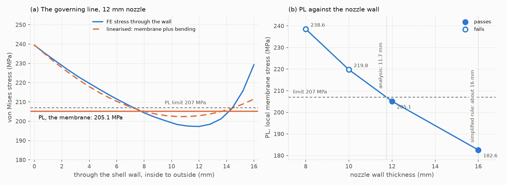

The question
A 200 mm bore nozzle with a 12 mm wall goes into a 1000 mm bore shell with a 16 mm wall, at 3.5 MPa. Can it go in without a reinforcing pad?
It's judged the way ASME's design-by-analysis rules (Section VIII, Division 2, Part 5) judge it: the stress through the wall is split into a membrane part and a bending part, and each is held to its own limit. The allowable stress, S = 138 MPa, is a typical carbon-steel value, not taken from the code's tables.
The answer
Yes, but only just. The membrane stress at the junction is 205.1 MPa against a 207 MPa limit. The mesh uncertainty is 0.03 %, so the pass is real for this model, but the margin is thin against the judgement calls behind it: where the lines through the wall sit, the weld size, and the sharp inner corner.
The wall needs about 11.7 mm. A simpler pressure-area rule, the kind a design-by-rule check uses, asks for about 16 mm. I'd recommend 14 mm: about 6 % margin, without the rule's full thickness.
Why it matters
Cutting a hole in a pressure vessel removes material that was carrying the pressure, and the wall around the hole has to carry more. Design codes offer two ways to deal with it. Design by rule uses simple formulas with generous margins: quick, safe and often heavier than needed. Design by analysis uses a stress model of the actual shape and can justify a thinner wall, but it demands more care, because a finite-element model reports stresses the simple rules never see.
The care is in how the stress is read. Right at a sharp corner the computed stress is very high and depends on the mesh. The codes don't ask for that number. They ask what the wall carries on average through its thickness (membrane) and how much it bends (bending), because those are what decide whether the wall bursts or yields through. Getting from a field of stresses to those two numbers is called linearisation, and it's easy to do wrong in ways that flip the verdict.
The model
- Vessel
- A cylindrical shell, 1000 mm bore with a 16 mm wall, modelled for 1000 mm each side of the nozzle.
- Nozzle
- A radial nozzle, 200 mm bore with a 12 mm wall, standing 350 mm, set through the shell wall. A 10 mm weld fillet on the outside; the inner corner is left sharp.
- Material
- Steel, linear elastic: Young's modulus 200 GPa, Poisson's ratio 0.3. Allowable stress S = 138 MPa.
- Load
- 3.5 MPa on every inside surface. The pull of the closed ends is applied on the cut ends of the shell and nozzle, so far from the nozzle the shell behaves exactly like a closed cylinder.
- Symmetry
- A quarter of the vessel, cut on the two planes through the nozzle axis.
- Mesh
- Quadratic tetrahedra: 6, 4 and 2.67 mm within 140 mm of the junction, growing to 14 mm. The finest has 284,554 nodes.
- Limits
- General membrane away from the nozzle, Pm ≤ S. Local membrane at the junction, PL ≤ 1.5 S = 207 MPa. Membrane plus bending at the junction, P + Q ≤ 3 S = 414 MPa.
- Analysis
- Linear static in CalculiX 2.22, then stress linearisation along lines through the wall.
The case file: recorded assumptions, limits and inputs
This is the study's own record, written before the run and saved with it, in the shorthand of the case file.
Cylindrical shell (Ri 500 mm, t 16 mm) with a set-in radial nozzle (ri 100 mm, tn 12 mm, 10 mm outer weld fillet) at 3.5 MPa internal pressure; quarter model, CadQuery + Gmsh C3D10 + CalculiX static; stresses linearised along classification lines; local element size 6 / 4 / 2.67 mm at the junction.
Assumptions, and how each is checked
- Linear elastic steel, E 200 GPa, nu 0.3; small displacement (checked).
- Closed vessel: the end thrusts of the shell and the nozzle are applied as uniform axial tractions on their cut ends (the far field is then the Lame closed-end cylinder exactly).
- Symmetry about the planes through the nozzle axis; no external nozzle loads (piping loads would add to the junction stresses).
- Outer weld modelled as a 10 mm fillet; the inner corner of the bore is sharp (affects peak stress, not the linearised values on the toe lines).
- Classification: membrane at the junction lines is local primary (PL), membrane plus bending there is primary plus secondary (P + Q); far from the nozzle the membrane is general primary (Pm). S_PS taken as 3 S.
- Allowable S = 138 MPa: synthetic, of the order of carbon-steel plate values; not from ASME Section II.
Limits
- Elastic analysis only: no limit-load or elastic-plastic route, no fatigue (peak stress reported, not assessed), no external loads, no corrosion allowance.
- The SCLs sit at the weld-fillet toes; other placements (through the crotch corner) give other values and are a judgement call.
- The pressure-area cross-check is a simplified form of the rule, not the standard's full procedure.
Inputs
| Input | Value |
|---|---|
| shell_inner_radius_mm | 500 |
| shell_thickness_mm | 16 |
| shell_half_length_mm | 1000 |
| nozzle_inner_radius_mm | 100 |
| nozzle_thickness_mm | 12 |
| nozzle_length_mm | 350 |
| weld_fillet_radius_mm | 10 |
| pressure_MPa | 3.5 |
| youngs_modulus_MPa | 200000 |
| poisson_ratio | 0.3 |
| element_size_local_mm | 4 |
| element_size_far_mm | 14 |
| refine_radius_mm | 140 |
| mesh_growth | 0.08 |
| allowable_stress_MPa | 138 |
How it works
CadQuery builds the quarter vessel, Gmsh meshes it with small elements at the junction, and CalculiX solves it. The stresses are then read along straight lines through the wall, called stress classification lines. There are four at the junction, at the toes of the weld fillet on the shell side and the nozzle side, in each of the two symmetry planes, plus one far from the nozzle.
On each line the six stress components are averaged through the wall to give the membrane stress, and the straight-line variation gives the bending. Whatever is left over is the local peak that a sharp corner produces, and the limits leave it out by design. The governing line is on the shell side of the junction, in the plane along the vessel.

How I checked it
- Equilibrium is exact. The pressure on every wetted surface balances the reactions on both symmetry planes to 3 × 10⁻⁷. If a loaded face had been missed, this would show it.
- Far from the nozzle, an exact solution. There the shell is a plain thick cylinder, which has an exact (Lamé) solution. The model matches it to within 0.03 %.
- Mesh refinement. At 6, 4 and 2.67 mm, PL is 205.04, 205.13 and 205.13 MPa. The linearised values converge even though the stress at the sharp inner corner doesn't, which is why the code linearises.
- A second route to the same decision. The simplified pressure-area rule, worked independently from the geometry, points the same way and is more cautious, as a rule should be.
What I caught along the way
- A prediction that was too pessimistic. I predicted about 3 % mesh uncertainty on PL, more than the 1 % margin, so I expected an "it can't tell, thicken it" answer. It converged to 0.03 %, which turned the answer into a verified pass with a thin margin, and the thickness sweep then shows how fast that margin goes.
- A result reported as unverified. P + Q moved by 0.08 % and then 0.27 % as the mesh was refined. The convergence check rightly calls that divergent: the surface bending picks up the sharp corner. With a 42 % margin the verdict stands, but it's reported as unverified and not as a clean pass.
- A tolerance that was wrong on paper. The sample points on the curved surfaces sit 0.1 % outside the straight-sided elements, so a check that every point lies inside the mesh failed in the first trial. The tolerance was corrected, with the reason written in the case file, before any evidence run.
Limits, and what I'd do next
- Pressure only. No piping loads on the nozzle, no thermal gradients and no fatigue screening. Piping loads would add directly to the junction stress and could use up the thin margin, so they're the first thing I'd add.
- Where the classification lines are placed is a judgement call, and I haven't yet measured how much the answer moves with it.
- The allowable is synthetic and the pressure-area rule is a simplified form, so this follows the structure of a code calculation without being a stamped one.
- The viewer's render comes from solving the finest mesh again, because the run didn't keep its full 3D results. The re-solve reproduces the run's membrane and bending stresses on every line to nine digits.
Evidence
Run reports, with every check and the saved inputs